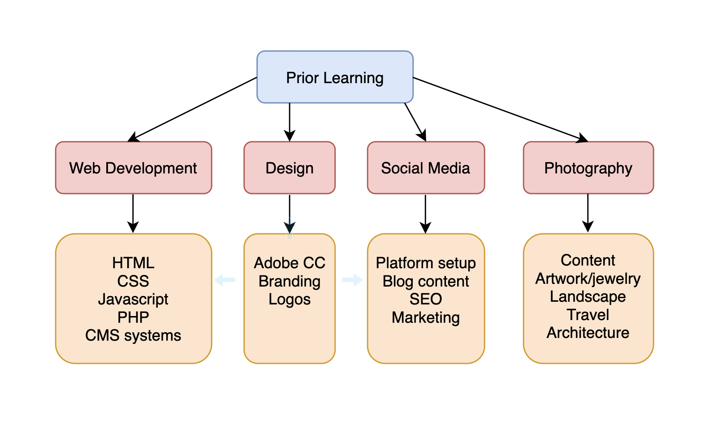

Last updated: August 4, 2019
Career Buddy: Will Harris
3 Quantitative Accomplishments:
3 Qualitative features about myself:
I am very passionate about travel and music, and love to plan trips to see live music with my husband. I love the logic and definitiveness of travel planning, as I get to research and find the best hotels, transportation and activities for that particular trip. I also love that I get to use creativity to create new options that may not have been initially visible at the start of the planning process, with the ultimate goal of creating a fun, organized, but not overly planned trip. A good example of this was a trip we planned in 2017 to go to a music festival in England. The logical challenges involved planning a trip for 5 people of various ages and various travel backgrounds, with different goals, at the height of summer when activity and hotel prices were very high. We used a lot of creativity to plan ways for everyone to have a variety of experiences (by breaking up into separate groups at times), and to find solutions when things didn't go as planned (i.e., suddenly finding ourselves with no accommodations). But when we were able to use logic and creativity together, we were able to succeed with planning a great trip where everyone had great experiences.
Version 1
Hi, I'm Erica Tollefson. I am a freelance developer who builds websites for creatives and solopreneurs, aiming to make their lives easier by tailoring their sites to their customers' needs. Does your website need a refresh?
The image on the left showcases where I am currently in my career journey. I am ready to embark on a new phase by heading into the harbor, but am still completing preparations for the journey, and the water I will be launching into is within sight.
The image on the right showcases where I would like to be in a few years time: well into my journey, with a possible destination on the horizon, working hard to continue to build skills that will take me closer to my destination.
I hope to bridge these two images by gathering the skills, information and supports I need to start my own business. I believe it's important for everyone to continue to learn and grown throughout their lifetimes, so I will also continue to focus on gaining new skills, and trying to keep up to date with changes in the field, as technology constantly evolves.
While searching for myself online, I primarily found my LinkedIn page (which is/will be full of professional and academic information), a web design and photography portfolio, and information about other people with the same name. I don't have any publicly available social media profiles. Fortunately, the information showing about other people with the same name is very benign (in case someone thought any of that information was about me). There does not appear to be anything that would keep a human resources employee from calling me in for an interview, though it might also help to increase my online visibility and branding.

The first week of bootcamp has been very interesting and challenging. I love learning, and I love being challenged, so I feel like I am in the right place, as I need to work hard to keep up with the new concepts and information we are getting everyday, which on the whole feels like a good challenge. I am just hoping the coming weeks won't feel too overwhelming as we have a lot of information to cover in a short time...
This week has been a little bit of a roller coaster at bootcamp. As we worked through the first phase of our object oriented assignment, I realized how much terminology there is to learn while learning new aspects of technology (the assignment felt like a foreign language at first). Hopefully the terminology will come while just generally learning how to put concepts into practice, but it is another area I realize I need to focus on.
This week has been challenging in regards to keeping up with all of the activities required for bootcamp, from exercises about CSS and Bootstrap, to ProDev, to our personal and group projects. There is so much value in each of these activities, but it can be a lot to keep balanced! I'm generally very good with time management, but it's still challenging when there is so much to do, and just not enough existing time to get it done...